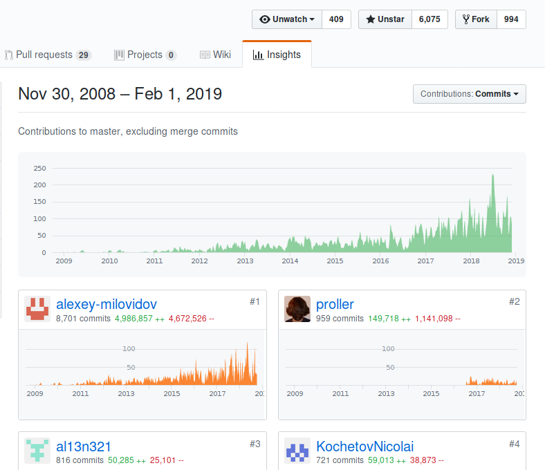
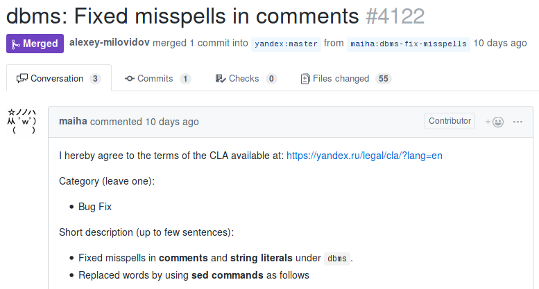
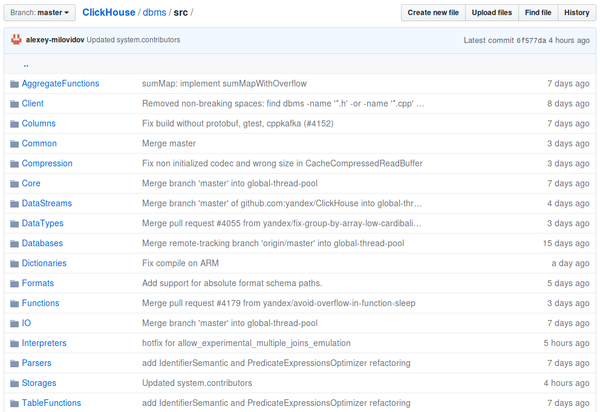

Where to Find ClickHouse Developers

Here!
Here!

:) SELECT * FROM system.contributors ┌─name──────────────────────────────────┐ │ Olga Khvostikova │ │ abdrakhmanov │ │ Mikhail Filimonov │ │ Jason │ │ achulkov2 │ │ Veniamin Gvozdikov │ ... │ Artemeey │ │ ivanzhukov │ │ Ilya Khomutov │ └───────────────────────────────────────┘ 303 rows in set.
You need to know C++.
... not necessarily
— to get into system.contributors, one commit is enough;
— you can fix a typo in a comment.

You can add a test. You can add a bug.
commit 531560a6a5c2f177213a0761b1f3595b0730318a
Author: Alexey Milovidov <milovidov@yandex-team.ru>
Date: Sun Dec 30 06:22:05 2018 +0300
Added bug [#CLICKHOUSE-3695]
diff --git a/dbms/tests/queries/bugs/remote_scalar_subquery.sql
new file mode 100644
+++ b/dbms/tests/queries/bugs/remote_scalar_subquery.sql
+SELECT (SELECT 1) FROM remote('127.0.0.{1,2}', system.one);
On disk — columns.
Data is stored by columns.
In RAM — columns.
Data is processed by columns.
As chunks of columns — for example, 65,536 elements.
Chunk size — depends on many things.
For SELECT — see the max_block_size setting.
Represented as objects with the IColumn interface.
Variants — ColumnVector<T>, ColumnString, ColumnArray...
ColumnVector<T> — almost like std::vector<T>.
But under the IColumn interface.
And instead of std::vector<T> — PODArray<T> (why?).
Previously it was std::vector. PODArray — is just an optimization.
ColumnString — consists of two components:
1. Bytes laid out sequentially.
2. Offsets to the i+1 string.
h e l l o \0 w o r l d \0
6 12
ColumnConst
Made of one nested column,
containing one value.
Basic operations:
— cut — extract part of a column, for LIMIT implementation;
— filter — for WHERE implementation;
— compareAt, permute — for ORDER BY implementation;
...
Ownership — using COWPtr<IColumn>.
Previously it was std::shared_ptr<IColumn>.
virtual Ptr filter(const Filter & filt, ssize_t result_size_hint) const = 0;
Instead of modifying contents, they create
and return a new column object.
This is normal, since operations are "coarse-grained".
But there are also "fine-grained", mutating operations.
— storing data in RAM;
— common operations on columns.
— Apache Arrow;
— arrays in NumPy;
— arrays in APL, J, K.
Isolate maximally efficient
inner loops from wrapper code.
Code doesn't have to be efficient as a whole.
Optimizable places should be localizable.
«vectorized engine»
Bonus:
— SIMD instructions;
— clever optimizations for homogeneous data
(IColumn::filter, LIKE function implementation);
IDataType
— binary serialization and deserialization to data streams;
— one column can be written to multiple physical streams, example: Array(Array(UInt8));
— serialization and deserialization in text form for different data formats;
— properties of the data type;
— completely immutable: std::shared_ptr<const IDataType>.
DataTypeUInt32 \ / ColumnUInt32
X
DataTypeDateTime / \ ColumnConst(ColumnUInt32)
A chunk of a table: a set of { ColumnPtr, DataTypePtr, name }
Data processing in the query execution pipeline
is performed over blocks.
... there's an architectural mistake here that needs to be fixed.
Should be split into
Header: set of { ColumnPtr, DataTypePtr, name }
Block: { size_t num_rows, std::vector<ColumnPtr>, properties... }
IBlockInputStream: Block read();
IBlockOutputStream: void write(Block);
Implement:
— data formats (CSV, JSON, Native...)
— reading and writing to tables;
— transformations on data (Limit, Filter, Expression, ...)
Strongly typed — blocks have the same data types
and constant values.
Interface — IStorage.
Implementations — StorageMemory, StorageMergeTree...
Class instances — are tables.
virtual BlockInputStreams read(
const Names & /*column_names*/,
const SelectQueryInfo & /*query_info*/,
const Context & /*context*/,
QueryProcessingStage::Enum & /*processed_stage*/,
size_t /*max_block_size*/,
unsigned /*num_streams*/)
It's just a BlockInputStream (for SELECT)
or BlockOutputStream (for INSERT),
that performs all necessary transformations
when calling the read or write method.
Question — what pipeline for INSERT SELECT?
SELECT works on the pull principle, INSERT on the push principle.
In reality this — is an architectural mistake.
Parser — manual recursive descent parser.
ClickHouse parser features:
— Nested columns;
— lambda functions;
— aliases and expressions anywhere in the query;
InterpreterSelectQuery
ExpressionAnalyzer
Most — rule based optimizations:
— constant folding;
— gluing identical expressions;
— removing unnecessary computations;
— removing unnecessary columns;
...
— pushing ARRAY JOIN closer to the end;
— turning chains of OR into IN;
Need to rewrite everything :)
Work over an entire block at once.
The code implements not a single function application,
but an entire loop over arrays.
The inner loop (usually) is its own
for each combination of argument types.
Inside the loop (usually) there are no virtual calls,
type checks, extra branches.
Example: for the addition operator there are
UInt8 UInt16 UInt32 UInt64 UInt8 UInt16 UInt32 UInt64
Int8 Int16 Int32 Int64 ✕ Int8 Int16 Int32 Int64
Float32 Float64 Float32 Float64
combinations.
And one of the arguments can be constant:
10 * 10 * 3 = 300 implementations.
IAggregateFunction
create — initialize state
in a pre-prepared chunk of memory;
add — update state by argument values;
merge — glue two states into one;
serialize, deserialize
— write to an input-output stream (network, file, table)
insertResultInto — get the final value.
Aggregate function state is a first class citizen in ClickHouse!
Main DBMS code — in the dbms/src directory.
Programs (client, server) — in the dbms/programs directory.
Advice: always start reading code from .h files
— they contain interface descriptions and more comments.


«Rick and Morty», ep. «Rest and Ricklaxation», Justin Roiland and Dan Harmon, 2017
For those who have already committed or tried to commit to ClickHouse.
... for full comparison based sorting.
In case when there's ORDER BY without LIMIT, this may slightly increase performance.
Look at sortBlock functions, and also implementations of IColumn::getPermutation.
... for fixing typos.
SELECT fomatReadableSize(bytes) FROM table
did you mean formatReadableSize?
SELECT least(123, 456)
— works.
SELECT least('123', '456')
— doesn't work.
Implement using IColumn::compareAt for identical types
and using castColumn, getLeastSuperType for different ones.
randomBinaryString, and also fuzzBits, fuzzBytes.
Like cache, but without caching — always direct query to source.
SELECT 1 IN (SELECT -1 UNION ALL SELECT 1)
For those who want to make their first commit to ClickHouse.
Empty --password parameter in the client should mean --ask-password.
NOT BETWEEN operator.
HTTP header query_id.
Decrease max_memory_usage and cache sizes on startup.
Bitwise operations for FixedString.
Add topKWeighted aggregate function.
...